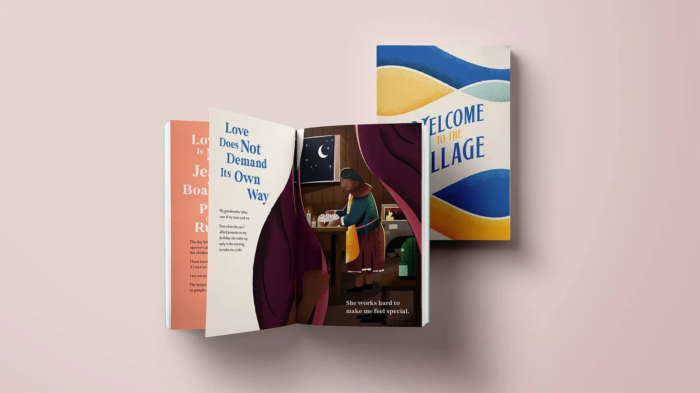
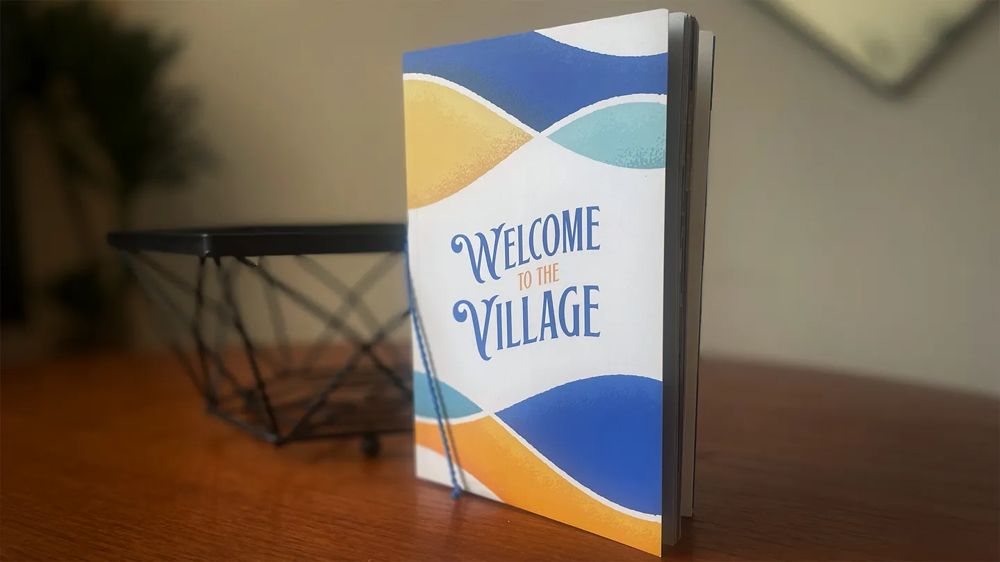
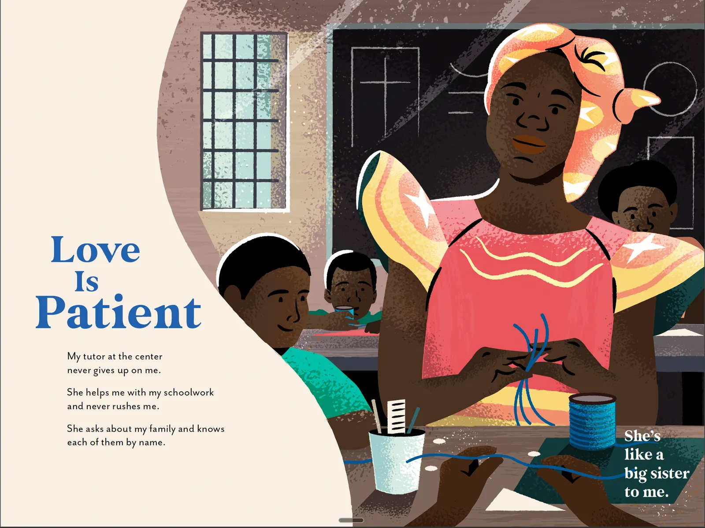
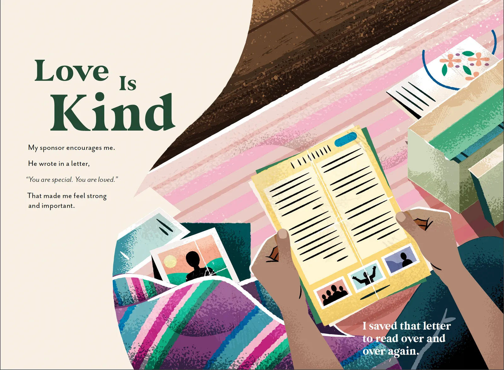
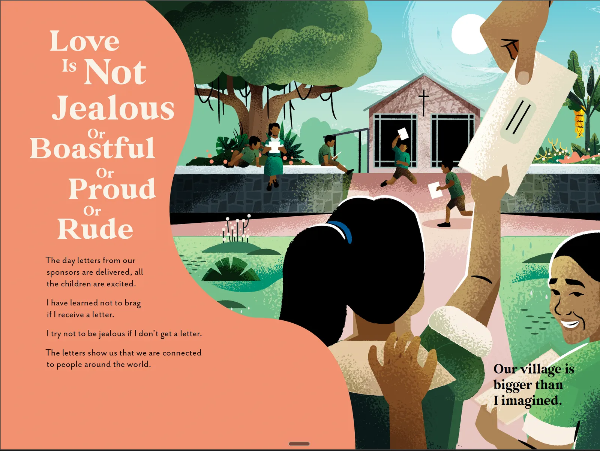
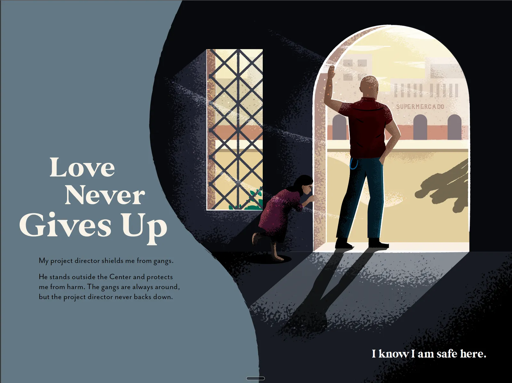
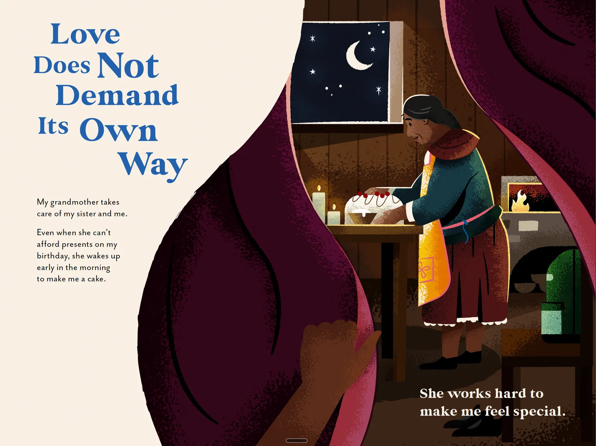
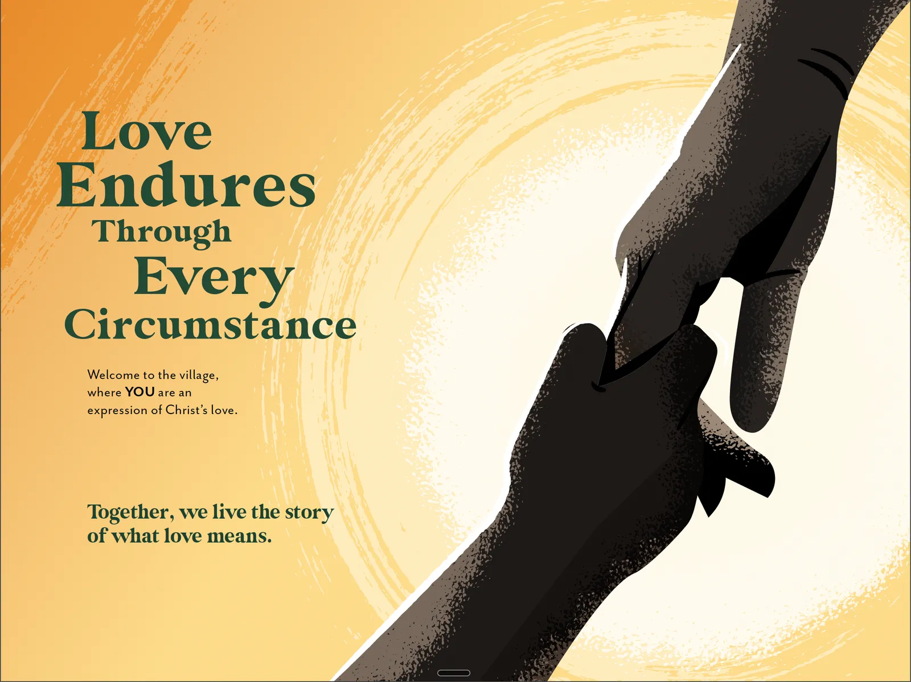
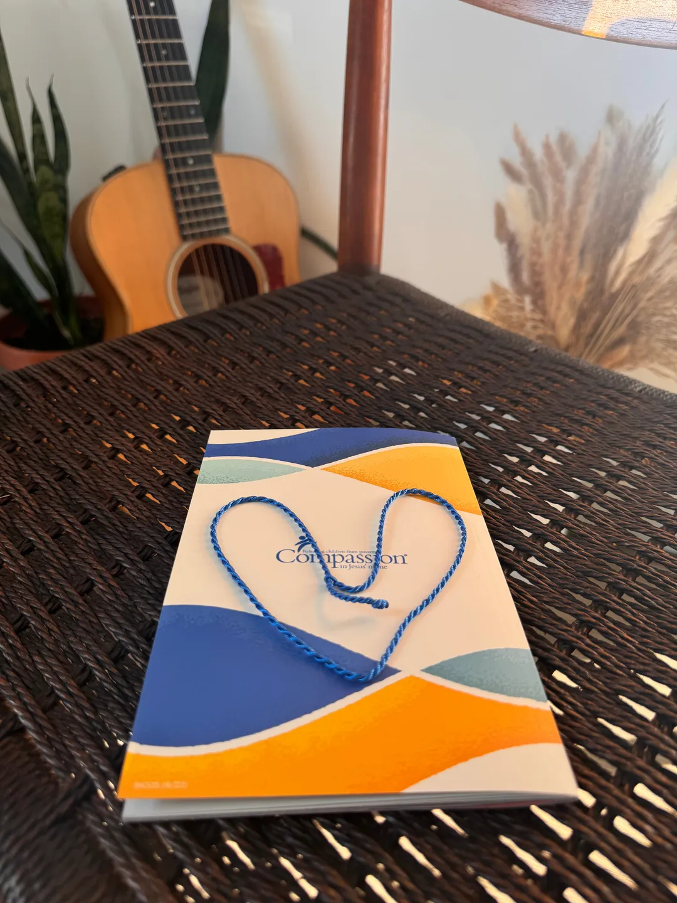
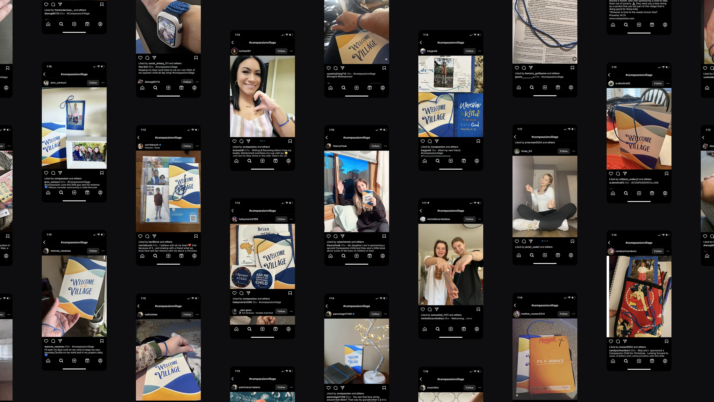

It Takes
a Village
Case Study
As part of a new sponsor onboarding test, Compassion International’s USA marketing team wanted to welcome new child sponsors, within their first 12 weeks, with a fridge-worthy experience.
The Challenge
I joined mid-flight, after the team had already landed on a children’s book. The output was decided, but the problem it solved was not. Before designing anything, I needed to know whether a book could improve onboarding at all.
Insight
New sponsors enter the sponsorship journey with various understandings, or even false assumptions, about how the program works. This can result in unnecessary pressure and guilt that they aren’t doing enough. So I interviewed those closest to the children: pastors, project directors, cooks. What I found were gut-wrenching stories of sacrificial love. No child was ever carried by a sponsor alone. A whole village was already loving them.
Concept
Those stories became the book. I made the call to frame it through the eyes of the child, so sponsors would experience the love described in 1 Corinthians 13 the way the child receives it. Each villager carries one expression of that love. The sponsor isn’t the hero of the story or the child’s only lifeline. They’re invited in as the newest member of a village that already loves this child, which lifts the guilt without promising a relationship the program can’t deliver.
Core idea
The love displayed by those closest to children in the field is a reflection of God’s love.
Execution
The Book
Each page introduces another villager as a reflection of God’s love, illustrated through poetic, authentic scenes drawn from our interviews. The new sponsor witnesses each moment through the eyes of the child, narrated by the child’s inner dialogue. A detachable blue string runs through every scene, inviting the sponsor into a village of people who love the child as Jesus loves them.







Community response
The Blue String
On the spine of the book, we included a detachable blue string that readers would discover in each scene of the story. Similar to 'Where's Waldo,' this feature creates a family activity where parents and children search for the blue string in each illustration. This artifact aimed to invite new sponsors to join the community of villagers contributing to helping a child out of poverty and to share a picture of themselves wearing it on social media.


Impact
Scaling Real Engagement
Planned as a 10,000-sponsor test, the book became a 200,000-copy print run, with more than 115,000 already delivered. In a controlled test, recipients outperformed a 30% holdout on every measure, including the primary KPI: understanding their role as sponsor.
- 20x
- Scale-up from a 10K-sponsor test to a 200K print run
- 94%
- Increase in role understanding
- 97%
- Reported being delighted with the onboarding experience